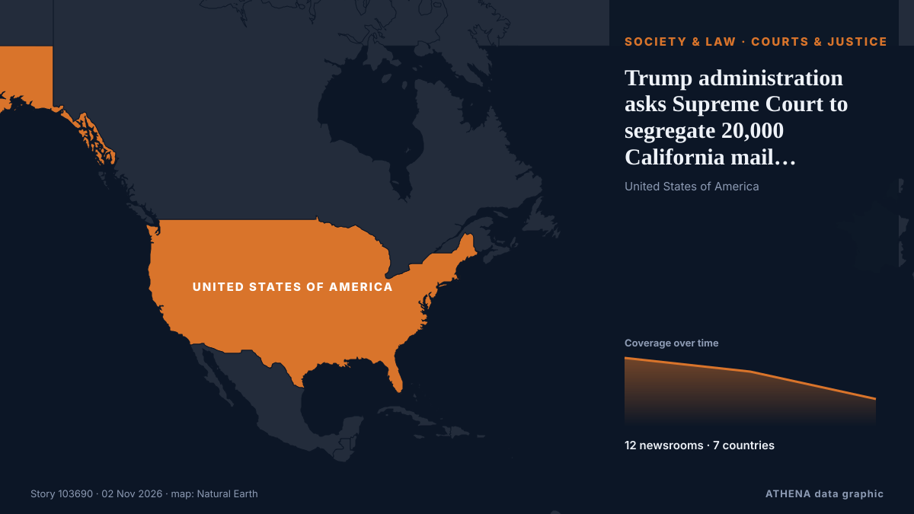

المحاكم والقضاء
برعايةبرعاية  Cybernetics and Artificial Intelligence Lab Welcome to the Cybernetics and Artificial Intelligence Laboratory, established at the Department of Business Administration of the National
Cybernetics and Artificial Intelligence Lab Welcome to the Cybernetics and Artificial Intelligence Laboratory, established at the Department of Business Administration of the National
| 20 أكتوبر | 0 |
|---|---|
| 21 أكتوبر | 0 |
| 22 أكتوبر | 0 |
| 23 أكتوبر | 0 |
| 24 أكتوبر | 0 |
| 25 أكتوبر | 0 |
| 26 أكتوبر | 0 |
| 27 أكتوبر | 1 |
| 28 أكتوبر | 1 |
| 29 أكتوبر | 3 |
| 30 أكتوبر | 7 |
| 31 أكتوبر | 4 |
| 1 نوفمبر | 3 |
| 2 نوفمبر | 5 |
تُعرض العناوين بالإنجليزية كما نُشرت.

Trump administration asks Supreme Court to segregate 20,000 California mail ballots over noncitizen voting claims
Emergency appeal follows lower court rulings rejecting federal effort to separate ballots ahead of midterm elections. من Anadolu Agency (English)
Brussels sides with Donald Tusk in Poland’s court crisis
The confrontation has attracted a response from France's Marine Le Pen and Slovenia's Janez Janša. من Euractiv
'Don't take court for granted': Delhi court summons Nora Fatehi again in extortion case
Dubai: Bollywood actor Nora Fatehi has been summoned to appear before a Delhi court as a prosecution witness in the Rs200 million extortion case involving alleged conman Sukesh Chandrashekhar. من Gulf News
Poland’s PM vows support for tribunal amid court crisis
Riot police have been guarding the court since Friday afternoon, with several hundred protesters gathered to demand the reinstatement of the president of the country’s Constitutional Tribunal. من Sydney Morning Herald
Korean judges encounter AI-generated fake legal precedents: Survey
SEOUL: Eight in 10 South Korean judges have experienced court cases in which false or nonexistent legal precedents generated by artificial intelligence (AI) were cited, a recent survey by the Supreme… من New Straits Times
Judge dismisses Trump's US$10b lawsuit against Wall Street Journal over Epstein letter
WASHINGTON: A US judge on Saturday dismissed President Donald Trump’s defamation lawsuit against the Wall Street Journal and media magnate Rupert Murdoch over a report that Trump sent a bawdy… من New Straits Times
Sinn Féin and SDLP welcome Taoiseach's plan to create new body to examine Irish unity
It’s understood the Taoiseach will bring a memorandum before Christmas proposing a new body to examine Ireland’s constitutional future, including Irish unity. من TheJournal.ie
Poland's Constitutional Court crisis deepens as judges allege coup attempt
Poland has been plunged into a constitutional confrontation after police entered the Constitutional Tribunal and its president was reportedly suspended from office, prompting allegations of a coup… من AzerNews
Polish president calls crisis talks after court standoff
Karol Nawrocki cut short a trip to Senegal and returned to Warsaw. من Euractiv
Delta Goodrem impresses judges again with ‘sensational’ Halloween week routine
Singer Goodrem scored 33 for her Viennese waltz. من The Irish News (Belfast)
Polish riot police deployed after court chief suspended
The court frequently ruled in favour of Polish legislation over European Union law. من Euractiv
Polish president Nawrocki pushes his way into top court amid rule-of-law tussle
Karol Nawrocki made his way through protesters around midnight in the latest escalation of his conflict with Prime Minister Donald Tusk. من Politico Europe
Syrian Hacker Behind Fake Tweet That Triggered $136 Billion Market Drop Gets 42 Months in Prison
Ahmad Umar Agha, a Syrian Electronic Army hacker known online as "Th3Pr0," has been sentenced by a U.S. federal court to 42 months in prison for his role in a hacking conspiracy that targeted Western… من The Hacker News
Poland's president returns as court crisis escalates
Polish President Karol Nawrocki turned back to Poland while en route to Senegal after a far-right ally was suspended as head of the country's top court. من RTÉ News
Iran court sentences award-winning filmmaker Jafar Panahi to 5 years in prison
The 66-year-old won the top prize in the 2025 Cannes film festival for It Was Just An Accident. من The Straits Times
Thailand extends activist’s jail term to more than 34 years
A Thai court has sentenced activist Arnon Nampa to an additional two years in prison, bringing his total sentence to over 34 years. من Arab News
Judge opens East Potomac Park probe into potential DOJ misconduct
A federal judge has opened an investigation into concerns that the Trump administration lied to her in the ongoing legal battle over President Trump’s desire to redevelop East Potomac Golf Links. من The Hill
French shooting suspect deliberately targeted Muslims and Africans, says prosecutor
A man suspected of a gun attack in the Paris suburbs last week, killing one person and wounding seven including a child, has admitted to "targeting individuals who appeared to be Muslim or African,"… من The Local France